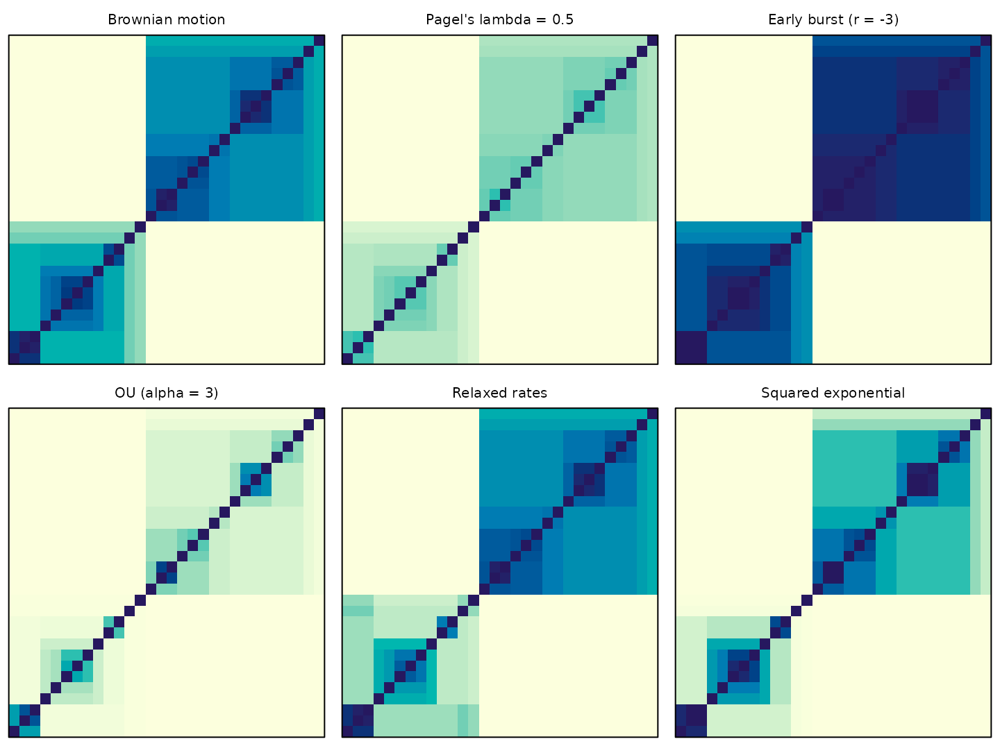
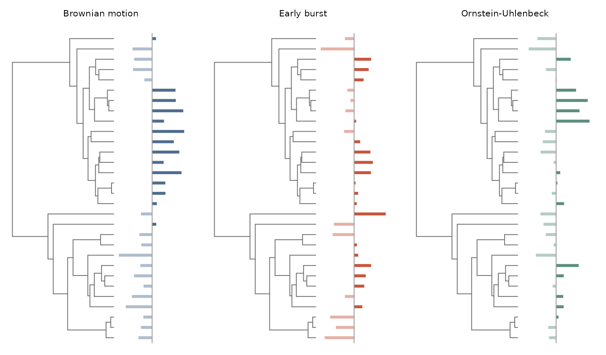
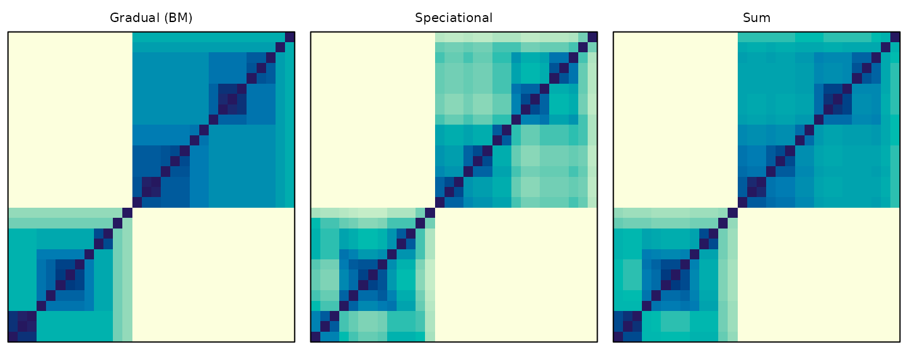
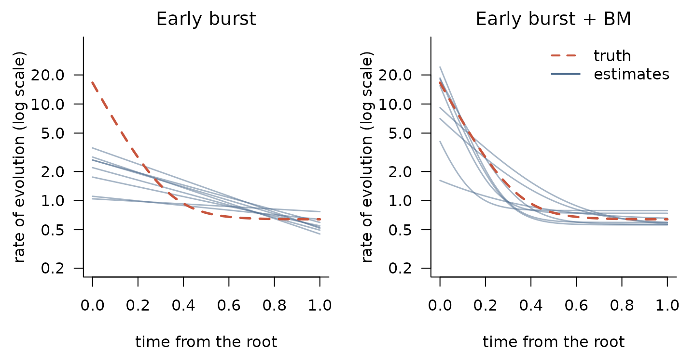
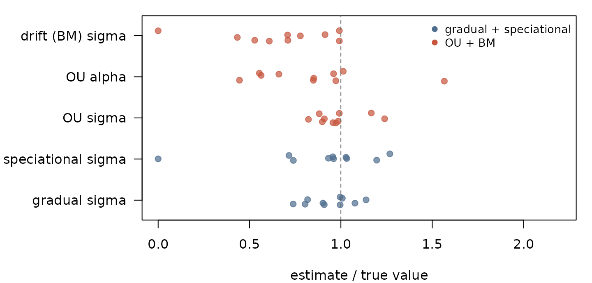
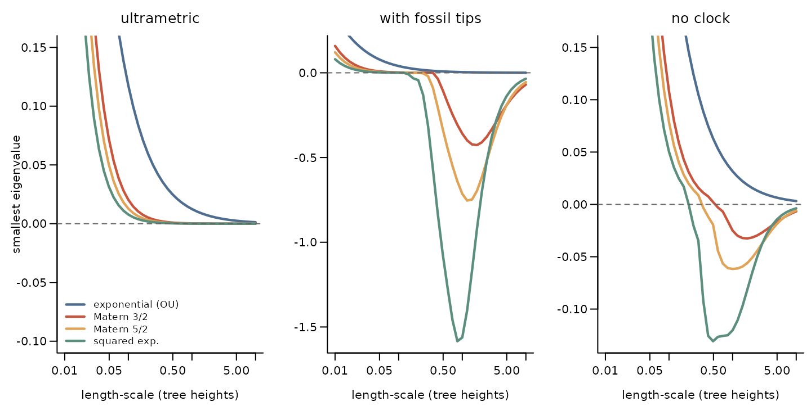
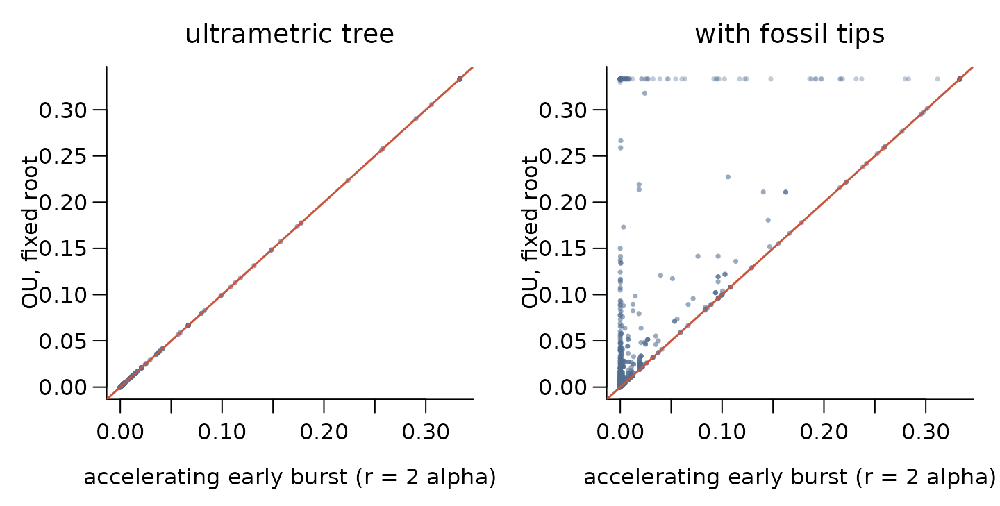
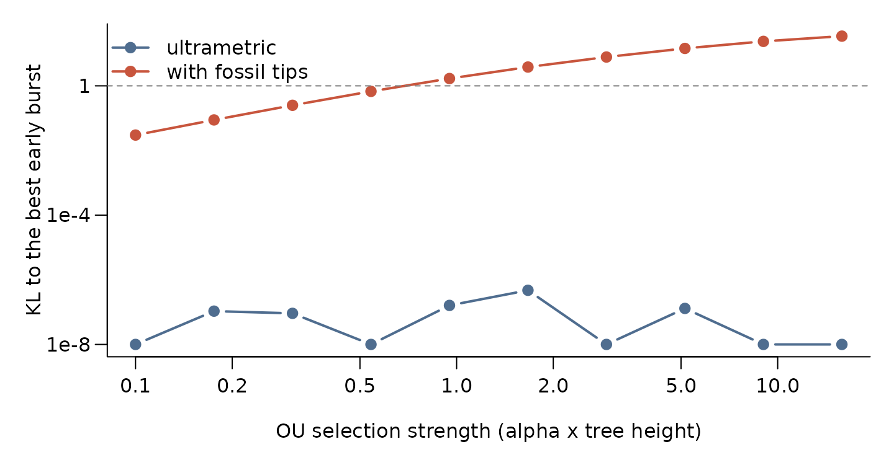
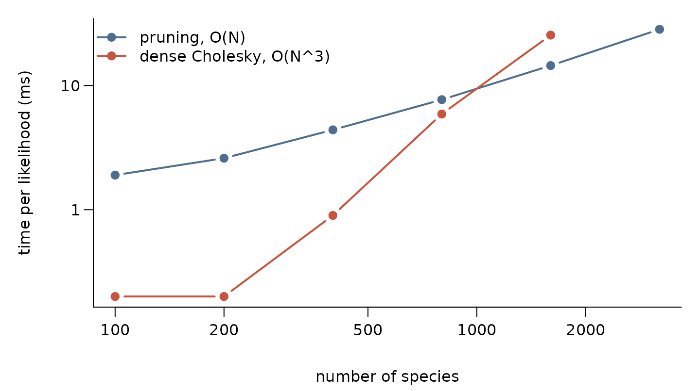

In phylogp a model of trait evolution is its
kernel: the covariance it implies between species. This vignette shows
how to look at kernels, build new ones, combine them into new models,
and check that they are valid before fitting anything. The fits need
Stan; everything else does not.
library(phylogp)
set.seed(12)
tr <- ape::rphylo(30, birth = 1, death = 0) # a pure-birth tree
tr$edge.length <- tr$edge.length / max(ape::node.depth.edgelength(tr))The building blocks
The components correspond to familiar models: Brownian motion (Felsenstein
1985), Pagel’s transformations (Pagel 1999), early burst (Blomberg et al. 2003;
Harmon et al.
2010), Ornstein–Uhlenbeck (Hansen 1997; Butler
and King 2004), autocorrelated rates (Thorne and Kishino 2002;
Eastman et al. 2011; Venditti et al. 2011) and
distance-based kernels as used for spatial structure (Freckleton and Jetz
2009; Hartmann and Jäger
2023). k_white() is the species-level variation
of the phylogenetic mixed model (Lynch 1991; Housworth et al. 2004). Kernels are
combined by sums and products, as is usual for Gaussian processes (Rasmussen and Williams
2006; Duvenaud et al.
2013).
| Component | Kernel (before scaling by sigma^2) |
Form |
|---|---|---|
k_bm() |
shared path length | branch-wise |
k_lambda() |
, tip variance kept | branch-wise |
k_kappa() |
branch lengths raised to | branch-wise |
k_delta() |
branch-wise | |
k_eb() |
branch-wise | |
k_ou() |
(random root) | branch-wise on ultrametric trees |
k_relaxed() |
rate evolves by BM along the tree | branch-wise, latent rates |
k_rate_time() |
rate a smooth function of time | branch-wise, latent rates |
k_regime() |
rate depends on regimes mapped on the tree | branch-wise |
k_white() |
independent tip variance; df = for Student-t |
tip |
k_slope(x) * k |
slope on x evolving under k:
|
latent (linear) or dense |
k_dist() |
on any distance | dense |
k_edge() |
your own edge variances | branch-wise |
Components are added with +, and a branch-wise component
can be multiplied by a covariate with k_slope() (see
vignette("slopes-prediction")). A sum describes independent
processes acting together, for example phylogeny, space and residual
variation:
k_bm() + k_dist(phi = "exponential") + k_white()
#> phylogp kernel: bm() + dist(exponential) + white()
#> bm1 bm() parameters: sigma
#> dist1 dist(exponential) parameters: sigma, ell
#> white1 white() parameters: sigmaBranch-wise components add variance along the edges of the tree. Any sum of them keeps the linear-time pruning likelihood (Felsenstein 1973; Ho and Ané 2014a); adding a dense component switches the model to dense linear algebra.
A gallery of kernels
The same tree seen through six kernels. Each matrix shows the correlation between species, with tips in tree order, so clades show up as blocks.
# a clade of about 8 species evolving 5 times faster, for k_relaxed()
clade <- 30 + which.min(abs(lengths(ape::prop.part(tr)) - 8))
below <- function(node) c(node, unlist(lapply(tr$edge[tr$edge[, 1] == node, 2], below)))
z <- numeric(30 + tr$Nnode)
z[below(clade)] <- log(5)
gallery <- list(
"Brownian motion" = list(k_bm(), NULL),
"Pagel's lambda = 0.5" = list(k_lambda(), list(lambda1 = list(lambda = 0.5))),
"Early burst (r = -3)" = list(k_eb(), list(eb1 = list(rate = -3))),
"OU (alpha = 3)" = list(k_ou(), list(ou1 = list(alpha = 3))),
"Relaxed rates" = list(k_relaxed(), list(relaxed1 = list(z = z))),
"Squared exponential" = list(k_dist(phi = "sqexp"), list(dist1 = list(ell = 0.5)))
)
op <- par(mfrow = c(2, 3), mar = c(0.5, 0.5, 2, 0.5))
for (nm in names(gallery))
kernel_plot(gallery[[nm]][[1]], tr, pars = gallery[[nm]][[2]],
main = nm, show_tree = FALSE)
par(op)Simulating from a kernel
kernel_simulate() draws traits from a kernel: a quick
way to see what data a model expects (a prior predictive check).
trait_plot <- function(tree, y, main, col) {
H <- max(ape::node.depth.edgelength(tree))
ape::plot.phylo(tree, show.tip.label = FALSE, x.lim = c(0, 1.75 * H),
edge.color = "grey45", main = main, cex.main = 1, font.main = 1)
lp <- get("last_plot.phylo", envir = ape::.PlotPhyloEnv)
tips <- seq_along(tree$tip.label)
x0 <- 1.38 * H
y <- y - mean(y) # deviations from the mean
v <- y[tree$tip.label] / max(abs(y)) * 0.33 * H
segments(x0, lp$yy[tips], x0 + v, lp$yy[tips], lwd = 3.5, lend = 1,
col = ifelse(v > 0, col, adjustcolor(col, 0.45)))
segments(x0, 0.5, x0, length(tips) + 0.5, col = "grey60")
}
set.seed(11)
op <- par(mfrow = c(1, 3), mar = c(0.5, 0.5, 2.5, 0.5))
trait_plot(tr, kernel_simulate(k_bm(), tr)[, 1], "Brownian motion", cols[1])
trait_plot(tr, kernel_simulate(k_eb(), tr, list(eb1 = list(rate = -5)))[, 1],
"Early burst", cols[2])
trait_plot(tr, kernel_simulate(k_ou(), tr, list(ou1 = list(alpha = 6)))[, 1],
"Ornstein-Uhlenbeck", cols[4])
par(op)Under an early burst, differences arise deep in the tree and whole clades differ; under strong OU selection, close relatives can differ as much as distant ones.
Writing your own kernel
Most new models of trait evolution are just a new rule for how much
variance each branch accumulates. k_edge() takes that rule
as a Stan expression of the edge length len, the heights of
the start and end of the edge hs and he, the
indicator is_tip, the tree height Tmax, and
your own parameters. Here is Pagel’s κ combined with a rate that changes
exponentially through time:
k_trend <- k_edge("pow(len, kappa) .* exp(beta * he)",
pars = list(kappa = c(0, 1), beta = c(-5, 5)),
name = "trend")
k_trend
#> phylogp kernel: edge("pow(len, kappa) .* exp(beta * he)")
#> trend1 edge("pow(len, kappa) .* exp(beta * he)") parameters: sigma, kappa, betaA kernel of this branch-wise form is a valid covariance on
every tree, as long as its edge variances are non-negative.
kernel_check() verifies this over a grid of parameter
values:
kernel_check(k_trend, tr)
#> Kernel check on a 30-tip ultrametric tree
#> [valid ] trend1 edge("pow(len, kappa) .* exp(beta * he)") (edge)
#> branch-wise form: valid wherever all edge variances are non-negative (checked numerically); no failures at 25 parameter values tried
#> The kernel is a valid covariance on this tree.A careless rule is caught:
kernel_check(k_edge("len + beta * he", pars = list(beta = c(-5, 5))), tr)
#> Kernel check on a 30-tip ultrametric tree
#> [INVALID] edge1 edge("len + beta * he") (edge)
#> branch-wise form: valid wherever all edge variances are non-negative (checked numerically); FAILS at 12 of 25 parameter values tried
#> The kernel is NOT guaranteed to be a valid covariance on this tree.
#> Use a branch-wise kernel or a completely monotone function of distance
#> (e.g. phi = "exponential"); adding jitter would change the model.The custom kernel goes into the generated Stan program unchanged, so it keeps the linear-time likelihood:
code <- strsplit(kernel_stancode(k_trend + k_white()), "\n")[[1]]
cat(code[grep("= trend1_kappa;", code, fixed = TRUE)[1] + (-2:3)], sep = "\n")
#> // edge("pow(len, kappa) .* exp(beta * he)")
#> {
#> real kappa = trend1_kappa;
#> real beta = trend1_beta;
#> w += square(trend1_sigma) * (pow(len, kappa) .* exp(beta * he));
#> }and it can be fitted like any built-in kernel:
big <- ape::rcoal(150)
big$edge.length <- big$edge.length / max(ape::node.depth.edgelength(big))
y <- kernel_simulate(k_trend, big,
pars = list(trend1 = list(kappa = 0.6, beta = -3)))[, 1]
fit <- phylo_gp(y ~ 1, data = data.frame(y = y, row.names = names(y)),
tree = big, kernel = k_trend, method = "optimize")
fit
#> Phylogenetic Gaussian process
#> Formula: y ~ 1
#> Kernel: edge("pow(len, kappa) .* exp(beta * he)")
#> Tips: 150
#> Likelihood: pruning (linear time)
#> Method: maximum likelihood
#>
#> parameter estimate
#> 1 (Intercept) 0.290
#> 2 trend1_sigma 0.507
#> 3 trend1_kappa 0.577
#> 4 trend1_beta -1.699
#>
#> log-likelihood: 153.24276New models from old parts
A sum of kernels is a model in which several independent processes
act on the trait at once. Several sums that phylogp fits
directly correspond to hypotheses that standard comparative software
either cannot fit or only approximates with a single process. This
section works through four of them. Each asks the same questions: what
does the sum say, does it fit better than its parts, and can its parts
be told apart?
The fits use maximum likelihood on a tree of 200 species, so each
takes a few seconds; with method = "sample" the same
kernels are fitted in a Bayesian way. Models are compared by AIC.
set.seed(21)
tr200 <- ape::rphylo(200, birth = 1, death = 0)
tr200$edge.length <- tr200$edge.length / max(ape::node.depth.edgelength(tr200))
fit_ml <- function(kernel, y) {
phylo_gp(y ~ 1, data.frame(y = y), tr200, kernel, method = "optimize", seed = 1)
}
delta_aic <- function(fits) {
a <- sapply(fits, function(f) AIC(logLik(f)))
round(a - min(a), 1)
}
estimates <- function(f) {
s <- summary(f)
stats::setNames(round(s$estimate, 3), s$parameter)
}Gradual and speciational change together
Change can accumulate with time along branches (gradual) or happen at speciation (cladogenetic, or punctuated) (Bokma 2008). Pagel’s κ (Pagel 1999) interpolates between the two with a single exponent on branch lengths, so it describes the mix but not how much variance each mode contributes. A sum keeps both modes and gives each its own rate: Brownian motion for the gradual part, and a branch-wise kernel in which every branch adds the same variance, whatever its length, for the speciational part.
k_punct <- k_edge("pow(len, 0)", name = "punct") # one unit of variance per branch
k_punct
#> phylogp kernel: edge("pow(len, 0)")
#> punct1 edge("pow(len, 0)") parameters: sigmaThe two parts give very different correlation structures. Under the speciational part, two species are similar if few branching events separate them, not if they diverged recently:
op <- par(mfrow = c(1, 3), mar = c(0.5, 0.5, 2, 0.5))
kernel_plot(k_bm(), tr, main = "Gradual (BM)", show_tree = FALSE)
kernel_plot(k_punct, tr, main = "Speciational", show_tree = FALSE)
kernel_plot(k_bm() + k_punct, tr, main = "Sum",
pars = list(bm1 = list(sigma = 1), punct1 = list(sigma = 0.25)),
show_tree = FALSE)
par(op)We simulate under the sum, with a speciational standard deviation of 0.25 per branch, and compare it with Brownian motion and with κ:
pars_punct <- list(bm1 = list(sigma = 1), punct1 = list(sigma = 0.25))
y1 <- kernel_simulate(k_bm() + k_punct, tr200, pars = pars_punct)[, 1]
fits1 <- list("BM" = fit_ml(k_bm() + k_white(), y1),
"kappa" = fit_ml(k_kappa() + k_white(), y1),
"gradual + speciational" = fit_ml(k_bm() + k_punct + k_white(), y1))
delta_aic(fits1)
#> BM kappa gradual + speciational
#> 4.8 3.4 0.0
estimates(fits1[["gradual + speciational"]])
#> (Intercept) bm1_sigma punct1_sigma white1_sigma
#> 0.271 0.981 0.237 0.000The sum fits best and recovers both rates (true values 1 and 0.25). κ
fits better than Brownian motion, but its estimate is a compromise
between the two modes rather than a measure of either. One caution: the
speciational variance on a tip branch is the same for every
species, so it cannot be told apart from k_white(); the
information about speciational change comes from the internal branches.
Speciation events whose descendants all went extinct are missing from
the tree, so the speciational rate refers to the branching events that
remain.
Bounded fluctuations around a drifting average
Over short times traits often fluctuate within limits, but over long times they wander: the “million-year wait” for large changes (Uyeda et al. 2011). An Ornstein–Uhlenbeck component describes the bounded fluctuations, and a Brownian component the slow drift that carries the average with it. The sum is close in spirit to an OU process whose optimum itself evolves (Hansen et al. 2008); in Gaussian-process terms it is a sum of a short-range and a long-range kernel.
pars_oubm <- list(ou1 = list(sigma = 2, alpha = 8), bm1 = list(sigma = 0.6))
y2 <- kernel_simulate(k_ou() + k_bm(), tr200, pars = pars_oubm)[, 1]
fits2 <- list("BM" = fit_ml(k_bm() + k_white(), y2),
"OU" = fit_ml(k_ou() + k_white(), y2),
"OU + BM" = fit_ml(k_ou() + k_bm() + k_white(), y2))
delta_aic(fits2)
#> BM OU OU + BM
#> 25.0 6.5 0.0
estimates(fits2[["OU + BM"]])
#> (Intercept) ou1_sigma ou1_alpha bm1_sigma white1_sigma
#> 0.131 2.174 9.603 0.563 0.000OU alone fits much better than BM alone, because most of the variation is bounded, but the sum is better still. On its own, OU has to explain the long-range similarity as well, which it does with a weaker pull towards the optimum (smaller α) than the true one.
An early burst that levels off
The early-burst model lets the rate of evolution decline exponentially from the root (Harmon et al. 2010), so the rate tends to zero towards the present. Adding Brownian motion gives a burst that settles to a background rate, , which is often the more plausible biology.
We simulate eight data sets in which the rate falls steeply and then settles at a background rate, and fit early burst alone and the sum to each. Rather than the parameters, which trade off against each other (a steeper, higher burst and a gentler, lower one give similar rates over most of the tree), we compare the rate curves they imply:
pars_ebbm <- list(eb1 = list(sigma = 4, rate = -10), bm1 = list(sigma = 0.8))
rate_curve <- function(p, t) {
eb <- if (is.na(p["eb1_sigma"])) 0 else p[["eb1_sigma"]]^2 * exp(p[["eb1_rate"]] * t)
bm <- if (is.na(p["bm1_sigma"])) 0 else p[["bm1_sigma"]]^2
eb + bm
}
t <- seq(0, 1, length.out = 100)
truth <- with(pars_ebbm, eb1$sigma^2 * exp(eb1$rate * t) + bm1$sigma^2)
sims <- lapply(1:8, function(i) {
set.seed(200 + i)
y <- kernel_simulate(k_eb() + k_bm(), tr200, pars = pars_ebbm)[, 1]
list(eb = fit_ml(k_eb() + k_white(), y), sum = fit_ml(k_eb() + k_bm() + k_white(), y))
})
# AIC of early burst alone minus AIC of the sum: positive values favour the sum
round(sapply(sims, function(s) AIC(logLik(s$eb)) - AIC(logLik(s$sum))), 1)
#> [1] -0.6 -1.1 -1.9 -0.6 1.1 1.3 4.0 -1.8
op <- par(mfrow = c(1, 2), mar = c(4, 4.5, 2, 1))
for (m in c("eb", "sum")) {
plot(t, truth, type = "n", log = "y", las = 1, bty = "l", ylim = c(0.2, 40),
xlab = "time from the root", ylab = "rate of evolution (log scale)",
main = c(eb = "Early burst", sum = "Early burst + BM")[m], font.main = 1)
for (s in sims) lines(t, rate_curve(estimates(s[[m]]), t),
col = adjustcolor(cols[1], 0.5), lwd = 1.5)
lines(t, truth, lwd = 2.5, lty = 2, col = cols[2])
}
legend("topright", c("truth", "estimates"), col = cols[2:1], lty = c(2, 1),
lwd = 2, bty = "n")
par(op)Early burst alone has to bring the rate towards zero by the present,
so it bends the curve in the same way every time: it starts too low,
declines too slowly, and keeps falling instead of levelling off at the
background rate. The sum’s curves scatter around the truth instead. But
AIC prefers the sum in only a few of the data sets: with 200 living
species, a burst that levels off and a gentler burst that does not are
hard to tell apart, because few branches inform the early part of the
tree. This is a case where a sensible model is weakly identified, and
the plain early burst would be preferred most of the time even though it
is wrong. Fossil tips, or k_rate_time() as a flexible check
on the shape of the curve, give more information.
Phylogeny plus environmental similarity
k_dist() accepts any distance between species, not only
geography. With a distance in climate space,
k_bm() + k_dist(D) + k_white() asks whether species living
in similar climates resemble each other beyond what their shared
ancestry explains, a niche analogue of the phylogeny + space models of
Freckleton and Jetz (2009). Here the climate of each
species is simulated independently of the tree:
set.seed(4)
clim <- cbind(temperature = runif(200, -1, 1), precipitation = runif(200, -1, 1))
rownames(clim) <- tr200$tip.label
D_clim <- as.matrix(dist(clim))
k_clim <- k_dist(D = D_clim, phi = "exponential")
pars_clim <- list(bm1 = list(sigma = 1), dist1 = list(sigma = 0.8, ell = 0.5),
white1 = list(sigma = 0.2))
y4 <- kernel_simulate(k_bm() + k_clim + k_white(), tr200, pars = pars_clim)[, 1]
kernel_check(k_bm() + k_clim + k_white(), tr200)
#> Kernel check on a 200-tip ultrametric tree
#> [valid ] bm1 bm() (edge)
#> branch-wise form with non-negative edge variances
#> [valid ] dist1 dist(D, exponential) (dense)
#> exponential kernel on a user-supplied distance: validity depends on the distance (checked numerically); no failures at 25 parameter values tried
#> [valid ] white1 white() (white)
#> independent tip variance
#> The kernel is a valid covariance on this tree.
fits4 <- list("BM + residual" = fit_ml(k_bm() + k_white(), y4),
"BM + climate + residual" = fit_ml(k_bm() + k_clim + k_white(), y4))
delta_aic(fits4)
#> BM + residual BM + climate + residual
#> 104.1 0.0kernel_check() confirms that the exponential kernel is
valid on this distance (Euclidean distances, for which the exponential
is always valid). The climate component is strongly supported. Because
the components are independent, their variances add, so the variance of
a species splits into phylogenetic, climatic and residual parts:
e <- estimates(fits4[["BM + climate + residual"]])
v <- c(phylogeny = e[["bm1_sigma"]]^2, # BM variance at the tips (tree height 1)
climate = e[["dist1_sigma"]]^2,
residual = e[["white1_sigma"]]^2)
round(v / sum(v), 2)
#> phylogeny climate residual
#> 0.63 0.37 0.00
true_v <- c(1, 0.8^2, 0.2^2)
round(true_v / sum(true_v), 2)
#> [1] 0.60 0.38 0.02The component is dense, so these models use linear algebra; a few hundred species are still fast.
Do the parts come back?
A good fit of a sum does not guarantee that its parts are identifiable. A quick check is to simulate several data sets from the sum and see whether the estimates scatter around the true values:
recover <- function(k_true, pars, k_fit, keep, nrep = 10) {
t(sapply(seq_len(nrep), function(i) {
set.seed(100 + i)
y <- kernel_simulate(k_true, tr200, pars = pars)[, 1]
estimates(fit_ml(k_fit, y))[keep]
}))
}
r1 <- recover(k_bm() + k_punct, pars_punct, k_bm() + k_punct + k_white(),
c("bm1_sigma", "punct1_sigma"))
r2 <- recover(k_ou() + k_bm(), pars_oubm, k_ou() + k_bm() + k_white(),
c("ou1_sigma", "ou1_alpha", "bm1_sigma"))
rel <- cbind(r1 / c(1, 0.25)[col(r1)], r2 / c(2, 8, 0.6)[col(r2)])
colnames(rel) <- c("gradual sigma", "speciational sigma", "OU sigma", "OU alpha", "drift (BM) sigma")
op <- par(mar = c(4, 9, 1, 1))
stripchart(as.data.frame(rel), method = "jitter", jitter = 0.15, pch = 19, las = 1,
col = adjustcolor(rep(cols[c(1, 2)], c(2, 3)), 0.7),
xlab = "estimate / true value", xlim = c(0, 2.2))
abline(v = 1, lty = 2, col = "grey40")
legend("topright", c("gradual + speciational", "OU + BM"), col = cols[1:2],
pch = 19, bty = "n", cex = 0.85)
par(op)The gradual and speciational rates are recovered well; in one data set the speciational part was absorbed by the residual, as expected from the tip branches. In the OU + BM sum only the OU standard deviation is recovered reliably. α and the drift rate are usually underestimated, and in one data set the drift vanished altogether: a weaker pull towards the optimum lets the OU part take over some of the long-range similarity, so the two parts trade off. The sum describes the data well, but its parts should be read with this in mind, as for the early burst with a floor above. Checks like these are cheap, and worth running before reading much into the parameters of any new combination.
Rates that depend on a regime attached to each branch, such as
habitat or diet, have their own component, k_regime(),
which reads the regimes from a stochastic character map (see
vignette("model-tour", package = "phylogp")), and adds to
other kernels like any component, for example
k_regime() + k_punct + k_white(). Products of two kernel
components, such as phylogeny × space, are not yet available: only
k_slope() multiplies a component.
Is my kernel valid?
A kernel must be positive semi-definite on the tips of the tree, or it is not a covariance at all. It is tempting to plug patristic distances into the squared-exponential kernel that most Gaussian-process software uses by default. Whether that works depends on the tree:
- On an ultrametric tree any non-increasing function of patristic distance is valid: it is just another tree transformation (ultrametric matrices are positive semi-definite; Dellacherie et al. (2014)).
- On trees with fossil tips, or phylograms without a clock, only completely monotone functions are guaranteed, such as the exponential, which is the Ornstein–Uhlenbeck kernel (Schoenberg 1938; Feragen et al. 2015). Squared-exponential and Matérn kernels can fail.
The smallest eigenvalue of the kernel matrix tells us directly. Below, three trees: ultrametric, ultrametric with some tips shortened to make them “fossils”, and a random tree without a clock.
set.seed(3)
ultra <- ape::rphylo(60, birth = 1, death = 0)
fossil <- ape::rphylo(60, birth = 1, death = 0.6, fossils = TRUE) # keeps extinct lineages
noclock <- ape::rtree(60)
trees <- list("ultrametric" = ultra, "with fossil tips" = fossil,
"no clock" = noclock)
sapply(trees, ape::Ntip)
#> ultrametric with fossil tips no clock
#> 60 168 60
phis <- c("exponential", "matern32", "matern52", "sqexp")
ells <- 10^seq(-2, 1, length.out = 40)
min_eig <- function(tree, phi, ell) {
K <- kernel_matrix(k_dist(phi = phi), tree, list(dist1 = list(ell = ell)))
min(eigen(K, symmetric = TRUE, only.values = TRUE)$values)
}
op <- par(mfrow = c(1, 3), mar = c(4, 4, 2.5, 0.5), mgp = c(2.4, 0.7, 0))
for (nm in names(trees)) {
H <- max(ape::node.depth.edgelength(trees[[nm]]))
ev <- sapply(phis, function(p) sapply(ells * H, function(l) min_eig(trees[[nm]], p, l)))
matplot(ells, ev, type = "l", lty = 1, lwd = 2.2, col = cols, log = "x",
ylim = c(min(-0.1, ev), 0.15), las = 1, bty = "l", main = nm, font.main = 1,
xlab = "length-scale (tree heights)",
ylab = if (nm == "ultrametric") "smallest eigenvalue" else "")
abline(h = 0, lty = 2, col = "grey40")
if (nm == "ultrametric")
legend("bottomleft", c("exponential (OU)", "Matern 3/2", "Matern 5/2",
"squared exp."), col = cols, lwd = 2.2, bty = "n", cex = 0.85)
}
par(op)kernel_check() applies these rules for you, and checks
numerically where validity is not guaranteed:
kernel_check(k_bm() + k_dist(phi = "sqexp") + k_white(), fossil)
#> Kernel check on a 168-tip non-ultrametric tree
#> [valid ] bm1 bm() (edge)
#> branch-wise form with non-negative edge variances
#> [INVALID] dist1 dist(sqexp) (dense)
#> sqexp kernel on patristic distances of a non-ultrametric tree is not guaranteed valid; FAILS at 13 of 25 parameter values tried
#> [valid ] white1 white() (white)
#> independent tip variance
#> The kernel is NOT guaranteed to be a valid covariance on this tree.
#> Use a branch-wise kernel or a completely monotone function of distance
#> (e.g. phi = "exponential"); adding jitter would change the model.
kernel_check(k_bm() + k_dist(phi = "exponential") + k_white(), fossil)
#> Kernel check on a 168-tip non-ultrametric tree
#> [valid ] bm1 bm() (edge)
#> branch-wise form with non-negative edge variances
#> [valid ] dist1 dist(exponential) (dense)
#> completely monotone function of a tree metric (valid on every tree)
#> [valid ] white1 white() (white)
#> independent tip variance
#> The kernel is a valid covariance on this tree.An invalid “kernel” should be replaced, not rescued by adding jitter to the diagonal, which silently changes the model being fitted.
When two kernels are the same model
Different processes can imply exactly the same distribution for the tips. On an ultrametric tree, a single-optimum OU process with a fixed root has the same kernel as an accelerating early-burst (ACDC) model with rate . With extant species alone the two cannot be told apart, but fossil tips separate them. The equivalence has been noted before (Ho and Ané 2014b; Uyeda et al. 2015; Murrell 2018).
alpha <- 1.5
pair <- function(tree) {
H <- max(ape::node.depth.edgelength(tree))
list(ou = kernel_matrix(k_ou(root = "fixed"), tree,
list(ou1 = list(alpha = alpha))),
eb = kernel_matrix(k_eb(upper = 10), tree,
list(eb1 = list(sigma = exp(-alpha * H), rate = 2 * alpha))))
}
m_ultra <- pair(ultra)
m_fossil <- pair(fossil)
max(abs(m_ultra$ou - m_ultra$eb)) # identical on the ultrametric tree
#> [1] 1.110223e-16
op <- par(mfrow = c(1, 2), mar = c(4, 4, 2.5, 1), mgp = c(2.4, 0.7, 0))
for (x in list(list(m_ultra, "ultrametric tree"), list(m_fossil, "with fossil tips"))) {
plot(x[[1]]$eb, x[[1]]$ou, pch = 16, cex = 0.5, las = 1, bty = "l",
col = adjustcolor(cols[1], 0.35), main = x[[2]], font.main = 1,
xlab = "accelerating early burst (r = 2 alpha)", ylab = "OU, fixed root")
abline(0, 1, col = cols[2], lwd = 1.5)
}
par(op)kernel_equivalent() asks the same question for any pair
of kernels. For each parameter setting of the first kernel it searches
over all parameters of the second for the closest tip
distribution, and reports the Kullback–Leibler divergence: the expected
log-likelihood ratio in favour of the first kernel for one data set
simulated from it. With the mean unknown (the default), only contrasts
between species are compared, as in REML.
kernel_equivalent(k_ou(root = "fixed"), k_eb(upper = 50), ultra, n_grid = 4)
#> Can eb() reproduce the tip distribution of ou(root = "fixed")?
#> 60 tips, ultrametric tree, unknown (contrasts compared) mean
#>
#> k1.ou1.sigma k1.ou1.alpha KL k2.eb1.sigma k2.eb1.rate k2_at_bound
#> 1 0.0108 1.22e-07 9.51e-01 0.0218 FALSE
#> 1 0.1080 1.23e-08 6.06e-01 0.2170 FALSE
#> 1 1.0800 1.83e-07 6.73e-03 2.1700 FALSE
#> 1 10.8000 1.43e-06 2.07e-22 21.6000 FALSE
#> verdict
#> identical
#> identical
#> identical
#> nearly identical
#>
#> KL: expected log-likelihood ratio in favour of the first kernel for one
#> data set simulated from it, with the second kernel's parameters chosen as
#> well as possible.
#> Nearly identical for every setting tried: expect weak evidence either way.The early-burst rate it finds is exactly . On the tree with fossil tips the answer depends on how strong selection is:
alphas <- 10^seq(-1, 1.2, length.out = 10)
kl_curve <- function(tree) {
H <- max(ape::node.depth.edgelength(tree))
sapply(alphas, function(a) kernel_equivalent(
k_ou(root = "fixed"), k_eb(upper = 100), tree,
pars = list(ou1 = list(alpha = a / H)))$KL)
}
kl <- cbind(ultrametric = kl_curve(ultra), "with fossil tips" = kl_curve(fossil))
op <- par(mar = c(4, 4.5, 1, 1), mgp = c(2.6, 0.7, 0))
matplot(alphas, pmax(kl, 1e-8), log = "xy", type = "b", pch = 19, lty = 1, lwd = 2,
col = cols[c(1, 2)], las = 1, bty = "l", yaxt = "n",
xlab = "OU selection strength (alpha x tree height)",
ylab = "KL to the best early burst")
axis(2, at = 10^c(-8, -4, 0), labels = c("1e-8", "1e-4", "1"), las = 1)
abline(h = 1, lty = 2, col = "grey50")
legend("topleft", colnames(kl), col = cols[c(1, 2)], lwd = 2, pch = 19, bty = "n")
par(op)On the ultrametric tree the two models coincide for every strength of
selection (KL at numerical zero). With fossil tips they separate once
selection is strong; above the dashed line one data set of this size
gives, on average, more than one log-likelihood unit of evidence for the
true model. The search is numerical, so a large KL means only that no
equivalent parameter values were found; check that the best parameters
of the second kernel are not at their bounds (the
k2_at_bound column).
Why branch-wise kernels scale
Branch-wise kernels never need the matrix: the likelihood is evaluated by a single pass over the edges, and leave-one-out densities by two. Even with the pruning loop in plain R, and the dense Cholesky in optimised linear-algebra libraries, the difference is large beyond a few hundred species:
# average over repeated evaluations, so that fast calls are measurable
time_it <- function(f, n = 10) system.time(for (i in seq_len(n)) f())[["elapsed"]] / n
sizes <- c(100, 200, 400, 800, 1600, 3200)
timing <- t(sapply(sizes, function(n) {
tree <- ape::rcoal(n)
y <- rnorm(n)
names(y) <- tree$tip.label
dense <- if (n <= 1600) {
K <- kernel_matrix(k_bm() + k_white(), tree)
yy <- y[rownames(K)]
time_it(function() { U <- chol(K); backsolve(U, yy, transpose = TRUE) })
} else NA
c(pruning = time_it(function() kernel_loglik(k_bm() + k_white(), tree, y)),
dense = dense)
}))
op <- par(mar = c(4.5, 5, 1, 1), mgp = c(3.2, 0.7, 0))
matplot(sizes, timing * 1000, log = "xy", type = "b", pch = 19, yaxt = "n",
lty = 1, lwd = 2, col = cols[c(1, 2)], bty = "l",
xlab = "number of species", ylab = "time per likelihood (ms)")
axis(2, at = 10^(-1:3), labels = c("0.1", "1", "10", "100", "1000"), las = 1)
legend("topleft", c("pruning, O(N)", "dense Cholesky, O(N^3)"),
col = cols[c(1, 2)], lwd = 2, pch = 19, bty = "n")
par(op)In the compiled Stan programs that phylo_gp() generates,
the same algorithm keeps each gradient evaluation linear in the number
of species, which is what makes kernels with thousands of latent rates
practical.